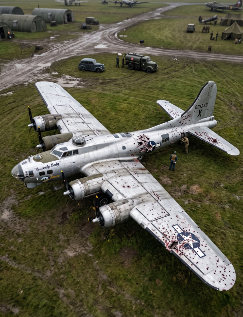

Идет Вторая мировая война. Вы — аналитик, работающий в центре ВВС. Командование поставило критическую задачу: снизить потери бомбардировщиков B-17.
Перед вами на фото бомбардировщик «Heavenly Body», только что вернувшийся с боевого вылета на аэродром. Весь его фюзеляж, хвост и крылья изрешечены пулями и осколками зенитных снарядов.
Генералы требуют укрепить самолеты броней. Но броня тяжелая: если забронировать весь самолет, он не взлетит. У вас есть ресурсы, чтобы укрепить только часть машины.
В главное меню квеста
Этот реальный исторический случай дал название термину «Ошибка выжившего». Мы склонны делать выводы только по тем данным, которые нам доступны («выжившим»), забывая о тех, кто не дошел до финиша.